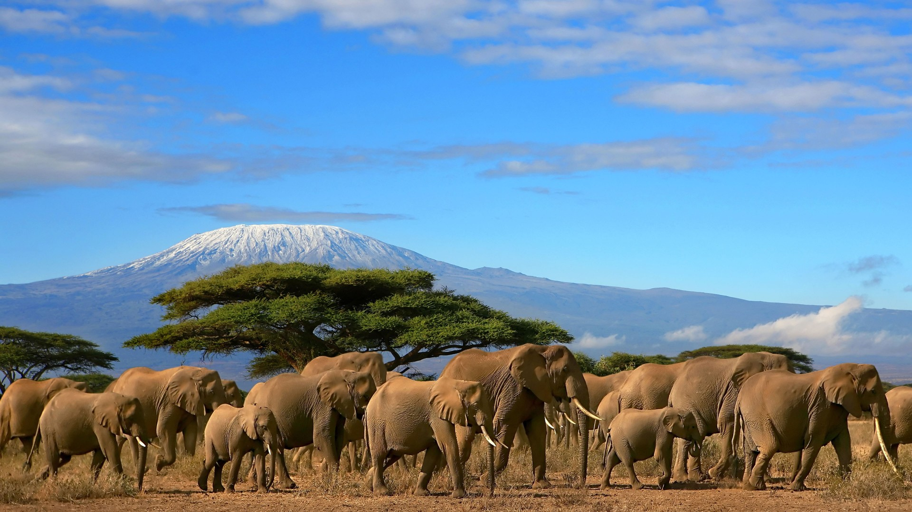
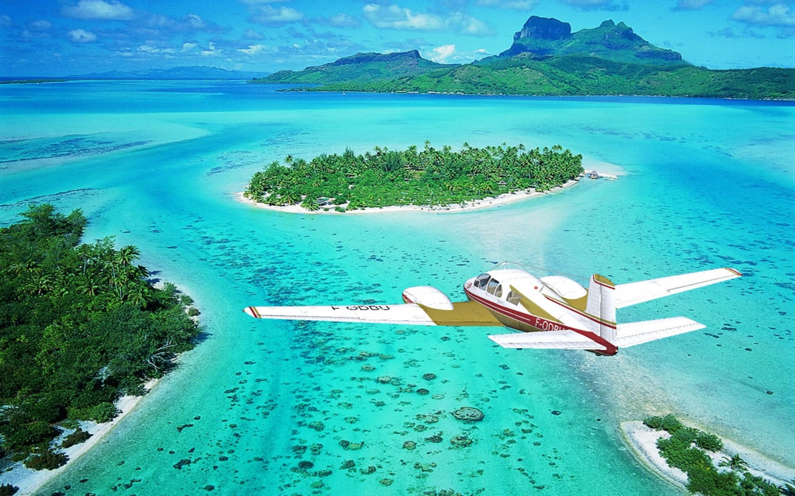
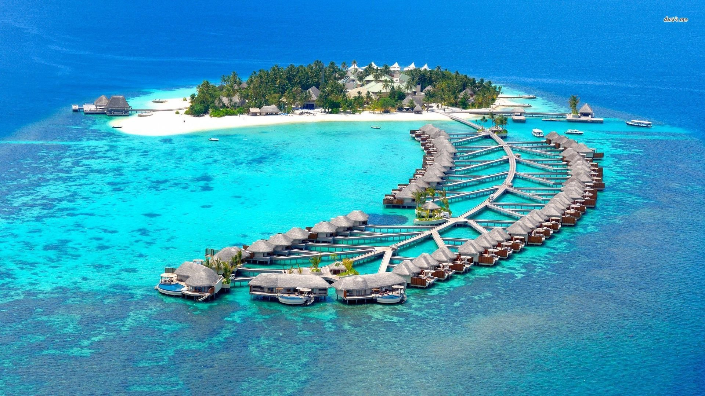
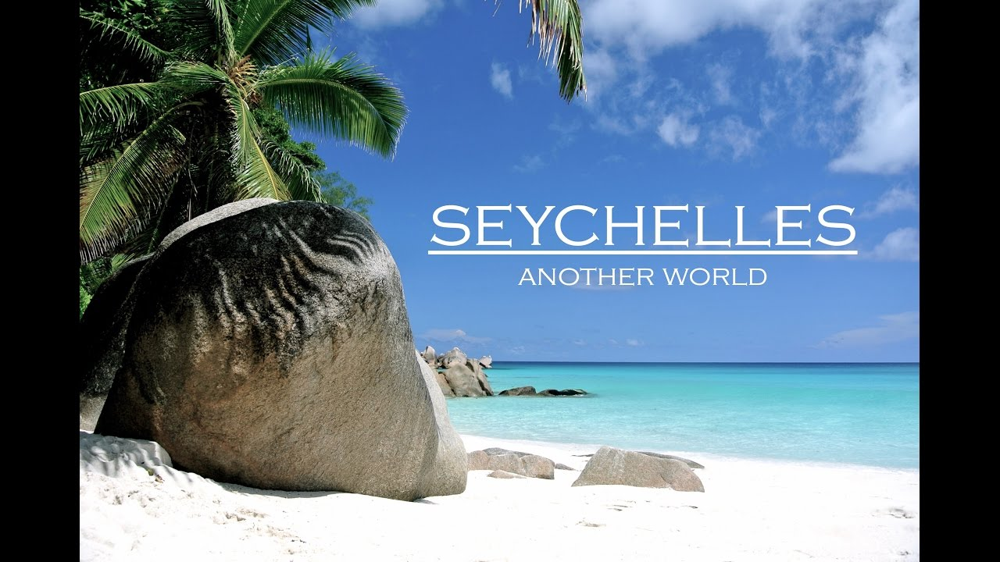
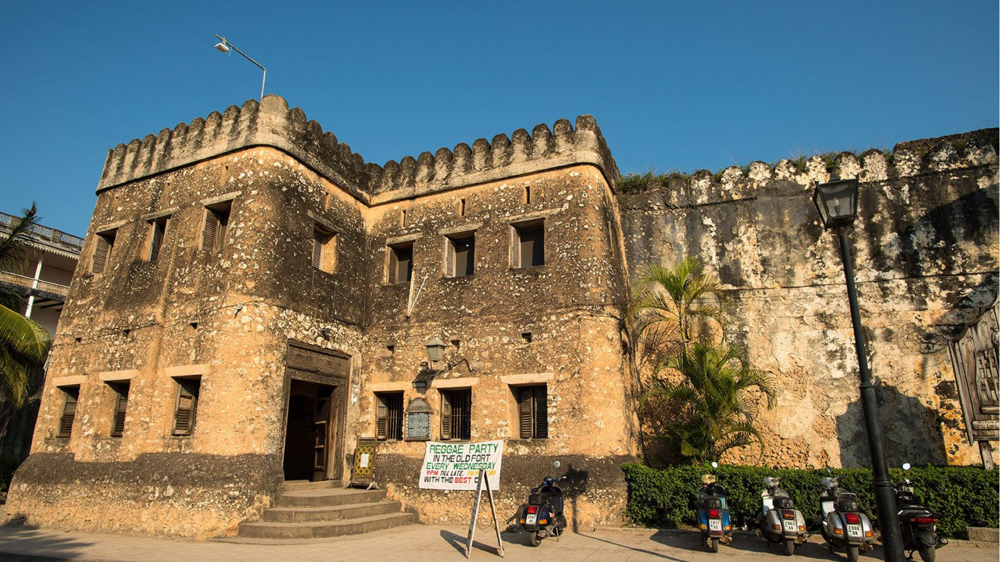

DISCOVER THE WORLD YOU HAVE NEVER SEEN
WHAT ARE YOU WAITING FOR?
Kenya
Kenya has diverse wildlife and spectacular landscapes. The country occupies an area of 580,367 square kilometers,
out of which approximately 44,359 square kilometers or 7.5 percent is wildlife conservation area.
...
The protected areas embrace various types of ecosystems namely: forests, wetlands, savannah, mountains, marine,
arid and semi-arid. The protected areas comprise of 23 terrestrial National Parks, 28 terrestrial National Reserves,
4 marine National Parks, 6 marine National Reserves and 4 national sanctuaries. Some of the wildlife that can
be seen in the National Parks and Reserves are lions, elephants, rhinos, buffaloes, wildebeests, zebras, kudus,
elands, gerenuks, hyenas, baboons, Thomson’s and Grant’s gazelles, giraffes, topis, bushbucks, waterbucks, leopards,
cheetahs, hippos, crocodiles and more than 1070 species of birds. Together with safaris, the country’s other
major tourist attractions are the coastal beaches. Kenya has 536 kilometers of unspoiled white-sand beaches lined
with palm trees and coconut trees. At the coast, holidaymakers can see spectacular marine life while snorkeling,
enjoy water sports such as kitesurfing, windsurfing, dhow sailing and kayaking. Mombasa, which is Kenya’s second
largest city after Nairobi (the capital city) has a rich cultural and historical background dating as early as
the 8th century. Malindi and Lamu are also popular destinations at the coast. Other Kenya’s tourism products
are business travel, eco-tourism, conference tourism, cruse tourism, cultural tourism, mountain climbing/trekking,
golfing, birding etc.
Bora-bora
Bora Bora, one of the Society Islands in French Polynesia, is the remains of an extinct, two-peaked volcano almost
entirely encircled by a barrier reef. The lagoon created between the island and the reef -- Bora Bora’s major draw
for tourists -- has warm, turquoise waters teeming with tropical marine life, and a number of tiny islets called
motu completing the picture-postcard scene.
...
Tourism is the number one industry in Bora Bora so there are plenty of activities and excursions for visitors to
consider, but the setting is likely to inspire sedentary days spent soaking in the atmosphere of this true island
paradise.The majority of activities and excursions for Bora Bora visitors are in or on the lagoon. These include
snorkeling, scuba diving, kayaking, glass-bottom boat tours, sunset cruises and outrigger canoe trips. You can
explore the lagoon independently with jet-ski, kayak and snorkel equipment, or take a guided trip with Moana
Adventure Tours (moanatours.com) or Keawai Excursons (diveasyborabora.com) in search of rays and sharks. Scuba
classes and excursions are available through the Bora Bora Diving Center (boradiving.com), Top Dive Polynesia
(topdive.com) and Diveasy Bora Bora (diveasyborabora.com). Consult your hotel concierge for a recommendation.
For an especially memorable experience, try a shark or manta ray feeding safari. On dry land, take a guided hike
up Mount Pahia or Mount Otemanu or a driving tour of Bora Bora’s forest-lined interior roads. Matira Beach Park
at the southern tip of the island is popular for its white sand and breezy trade winds. A bike ride around the
island’s mostly flat, 20-mile coastal road will take about half a day, depending how many stops you make.
Maldives
The Maldives Islands comprises of roughly 1190 small coral islands, and covers a total area of 104,00.00 sq. Kilometers.
...
These islands are no more than six feet above sea level and lie 73 degrees East Equator. The islands are grouped into nineteen
administrative ‘atolls’, and vary in size and character. Some are sandbanks, while others are tropical islands,
with lush vegetation, ringed with coral reefs, turquoise lagoons full of marine life, and white sandy beaches.Specks
of emerald green enveloped by dazzling turquoise waters like scattered beads in the ocean; white powdery beaches,
tall palms lean on towards the sea, crystalline white sands giving way to crystal clear waters, shades of turquoise
blend flawlessly with deeper hues of blue; pristine coral reefs and some of the most incredible underwater life
on our planet.
Sycheles
Mother Nature was very generous with these 115 islands scattered in the Indian Ocean, and has spoiled them rotten.
...
Undeniably, the beaches are the big attraction, and what beaches: exquisite ribbons of pearlescent sand lapped by topaz waters
and backed by lush hills and big glacis boulders. And hardly a soul in sight. Choosing your favourite beach is
like trying to pick a flavour of ice cream – they're all so good! Hot favourites include world-famous Anse Source
d'Argent, secluded Anse Marron, sexy Anse Takamaka and picture-postcard perfect Anse Lazio.Diving and snorkelling
are the most popular activities in the Seychelles, and rightly so.White-sand beaches, secluded coves, coral-coloured
sunsets, swish hotels, slick restaurants, hushed spas. With such a dreamlike setting, it's not surprising that
honeymooners and those seeking a glamorous tropical getaway have long had the Seychelles at the top of their
wish lists. Charge your camera batteries, people – the Seychelles is not dubbed 'The Galàpagos of the Indian
Ocean' for nothing. Watching sea turtles nesting on Bird Island's sandy beaches or giant Aldabra tortoises roaming
freely on Curieuse is one of those once-in-a-lifetime experiences. If you're hoping to spot sooty terns, tropicbirds,
warblers and magpie robins in their natural habitats, the bird sanctuaries of Aride, Cousin, and Bird Islands
should figure heavily in your planning. And Praslin's Vallée de Mai is a slice of Eden where you can see the
very rare coco de mer palms in their natural state.
Zanzibar
Zanzibar's capital is the historical Stone Town, home to much of Zanzibar's tourism industry. It is also a World
Heritage Site. The town is home to numerous historical and cultural sites, including Makusurani graveyard (where
many of the islands previous Arab rulers are buried), House of Wonders (a four story building which was the first
place on the islands with electrical lights), Hamamni and Kidichi Persian Baths (the first public baths on the
island),
...
Dunga Ruins (Ruins of a palace built in the 15th century by the rulers of the time), and the Peace Memorial Museum,
which serves a national historical museum detailing the island's long history.Zanzibar is home to large amounts
of beaches and clear Indian Ocean water, as well as coral and limestone scarps which allow for significant amounts
of diving and snorkeling. The diving and snorkeling are done in marine parks. The aquatic life seen includes;
dolphins, moray eels, lion fish, octopus and lobster Tourists may also go dhow cruising around the small islands.
Tourists can view the sunset and have refreshments on board.The town is famous for its spice tours. Tourists
visit the various coconut and spice plantations in the island. Zanzibar is known for its variety of spices that
are used to prepare food, cosmetics and medicines. Some of the fruits available include; banana, coconut, lime,
jackfruit and breadfruit. The spices available include; clove, nutmeg, black pepper, vanilla and coriander. Zanzibar
is also known for its salt and seaweed farms that may be visited by tourists on request.